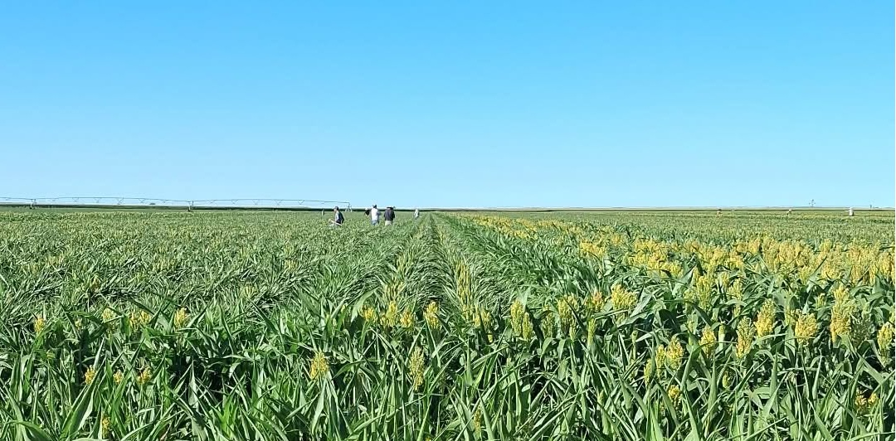

About Us

Cultivating Quality Through Experience
Roguing Future Seeds is a specialized agricultural services company dedicated to supporting the seed production industry through precision field operations, skilled labor, and a commitment to excellence. With decades of hands-on experience, we provide reliable services that help seed producers maintain genetic purity, improve crop quality, and achieve successful harvests.
Our leadership is backed by more than 20 years of experience in roguing operations, working with respected seed companies such as Dynagro and Remington Seeds. Throughout these years, we have developed extensive expertise in identifying and removing off-type plants, undesirable varieties, and contaminating genetic material. This critical process plays a vital role in preserving varietal integrity and ensuring the highest standards of seed quality.
In addition, we bring over 11 years of experience in pumpkin harvesting , gained through our work with Pumpkin Pyle in Texas.
Through professionalism, experience, and dedication, we strive to be a trusted partner in every project we undertake.